<!doctype html>
<html lang="en">
<head>
<meta charset="utf-8">
<meta name="viewport" content="width=device-width, initial-scale=1">
<title>SC-111 design review · The hero film tells the journey</title>
<meta name="description" content="Three options for the hero film: the journey in four chapters through one surreal day, in 10 to 15 seconds, looping.">
<script>
  (function () { var m = null; try { m = localStorage.getItem("sc3-theme"); } catch (e) {} var dark = m === "dark" || (m !== "light" && matchMedia("(prefers-color-scheme: dark)").matches); document.documentElement.setAttribute("data-theme", dark ? "dark" : "light"); })();
</script>
<link rel="icon" href="../../system/img/icon.svg" type="image/svg+xml">
<link rel="stylesheet" href="../../system/tokens.css">
<link rel="stylesheet" href="../../system/base.css">
<link rel="stylesheet" href="../../system/components.css">
<style>
  html, body { overflow: auto; height: auto; }
  body { background: var(--bg); color: var(--fg); font-family: var(--font-ui); }
  .board { max-width: 1280px; margin: 0 auto; padding: 40px 24px 96px; display: grid; gap: 40px; }
  .board h1 { margin: 0; font-family: var(--font-display); font-size: 40px; font-weight: 720; letter-spacing: -0.028em; line-height: 1.06; }
  .board h2 { margin: 0; font-family: var(--font-display); font-size: 28px; font-weight: 680; letter-spacing: -0.02em; }
  .board h3 { margin: 0; font-size: 18px; font-weight: 650; letter-spacing: -0.01em; }
  .board p { margin: 0; font-size: 15px; line-height: 1.5; color: var(--fg-2); max-width: 78ch; }
  .board blockquote { margin: 0; padding: 14px 18px; border-left: 3px solid var(--primary); border-radius: 0 12px 12px 0; background: var(--surface); color: var(--fg); font-size: 15px; line-height: 1.5; white-space: pre-line; }
  .head { display: grid; gap: 14px; }
  .meta { display: flex; flex-wrap: wrap; gap: 8px; font-size: 13px; color: var(--fg-3); }
  .meta span { padding: 6px 10px; border-radius: 999px; background: var(--fill); }
  .sec { display: grid; gap: 18px; padding-top: 28px; box-shadow: inset 0 var(--hair) 0 var(--line); }
  .grid { display: grid; gap: 14px; grid-template-columns: repeat(auto-fit, minmax(300px, 1fr)); }
  .shot { display: grid; gap: 8px; }
  .shot img, .shot video { width: 100%; height: auto; border-radius: 14px; box-shadow: var(--shadow-1), 0 0 0 var(--hair) var(--line); background: var(--surface); }
  .shot figcaption { font-size: 13px; color: var(--fg-3); }
  .pair { display: grid; gap: 14px; grid-template-columns: minmax(0, 3fr) minmax(0, 1fr); align-items: start; }
  .opt { display: grid; gap: 16px; padding: 22px; border-radius: 22px; background: var(--surface); box-shadow: var(--shadow-1), 0 0 0 var(--hair) var(--line); }
  .opt.rec { box-shadow: var(--shadow-1), 0 0 0 2px var(--primary); }
  .opt-head { display: flex; flex-wrap: wrap; align-items: center; gap: 10px; }
  .tag { display: inline-flex; align-items: center; gap: 6px; padding: 5px 10px; border-radius: 999px; font-size: 12.5px; font-weight: 600; background: var(--fill-2); color: var(--fg); }
  .tag.rec { background: var(--primary-soft); color: var(--primary-text); }
  .tag.k { background: var(--amber-soft); color: var(--amber-text); }
  .links { display: flex; flex-wrap: wrap; gap: 8px; }
  .links a { display: inline-flex; align-items: center; min-height: 36px; padding: 0 14px; border-radius: 999px; font-size: 14px; font-weight: 600; text-decoration: none; color: var(--primary-fg); background: var(--primary); }
  .links a.sec { color: var(--fg); background: var(--fill-2); box-shadow: none; padding: 0 14px; display: inline-flex; }
  table { width: 100%; border-collapse: collapse; font-size: 14px; }
  th, td { padding: 10px 12px; text-align: left; vertical-align: top; box-shadow: inset 0 calc(-1 * var(--hair)) 0 var(--line); }
  th { font-weight: 650; color: var(--fg-2); font-size: 13px; }
  td b { font-weight: 650; }
  ul.plain { margin: 0; padding-left: 18px; font-size: 15px; line-height: 1.5; color: var(--fg-2); }
  .note { padding: 14px 18px; border-radius: 14px; background: var(--amber-soft); color: var(--amber-text); font-size: 14px; line-height: 1.5; }
  .ask { display: grid; gap: 10px; padding: 22px; border-radius: 22px; background: var(--primary-soft); color: var(--fg); }
<body>
<main class="board">
  <header class="head">
    <div class="meta"><span>SC-111</span><span>Landing page · the hero</span><span>9 Oct 2026</span><span>Design review</span></div>
    <h1>The hero film tells the journey: the brand and the distributor, the food bank, the kiranas and the staff sale, the tax saved, through one surreal day.</h1>
    <p>Three options for the film and its plates, each a complete hero on the real kit with its clips rendered (Qwen-Image plates, LTX 2.5 clips, cut and graded in ffmpeg). Every option runs 10 to 15 seconds, loops under its Pause control, keeps the day-to-night-to-day light with the violet sky, and reads the four chapters in the strip under the copy. The switcher at the foot of every page swaps the film, so comparing is a click. Every page plays in light and dark, at 1440 and on a phone.</p>
    <blockquote>the hero looks amazing, but can you refine the video and images more. It should tell the story and journey of the application
1. Brands interacting with distributors
2. Distributors go down distributing food to Donations
3. Distributors selling to Kiranas or have a staff sale.
4. GST and tax savings happening everyone is happy...
Play about 10-15 seconds video and it should be really engaging, lighting effects should be like it is now (day changing to night and back with the purplish/violet sky effect looks surreal), but more visible if night scenes are depicted.
You have LTX2.5, qwen and ffmpeg... make the best use of them and come up with some really aesthetically background atmosphere</blockquote>
    <div class="links">
      <a href="option-a/mockup.html">Open option A</a><a href="option-b/mockup.html">Open option B</a><a href="option-c/mockup.html">Open option C</a>
      <a class="sec" href="option-a/mockup.html?theme=dark">A, dark</a><a class="sec" href="option-b/mockup.html?theme=dark">B, dark</a><a class="sec" href="option-c/mockup.html?theme=dark">C, dark</a>
    </div>
  </header>

  <section class="sec">
    <h2>The hero as it is</h2>
    <p>SC-78's film: two ten-second clips of the whole town, morning to night and back, chained and looping. The business works (the forklift, the truck, the shoppers, the van) but no chapter of the journey is staged: the story is only in the strip's words. The night is a dark navy in which most of the town is lost, and the violet only shows for a moment at dusk. The cycle is 20 seconds.</p>
    <div class="grid">
      <figure class="shot">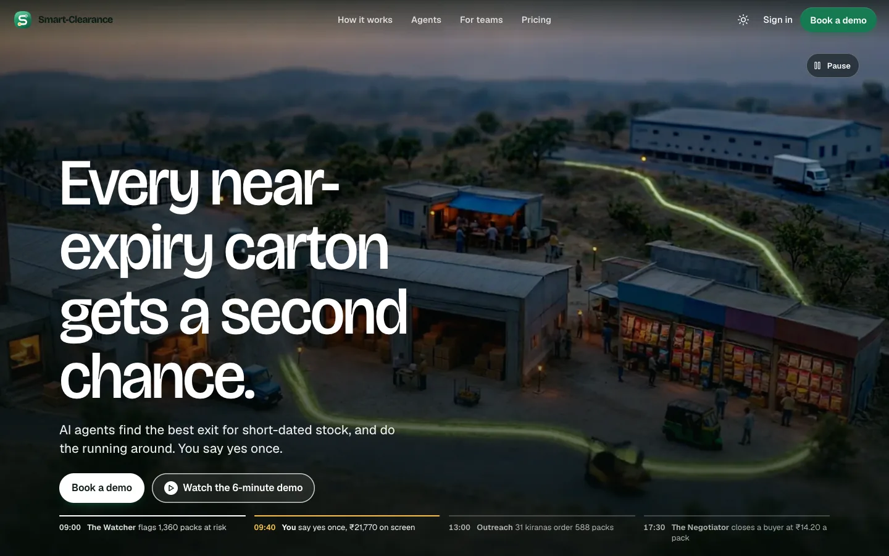<figcaption>Light, 1440: the morning half</figcaption></figure>
      <figure class="shot">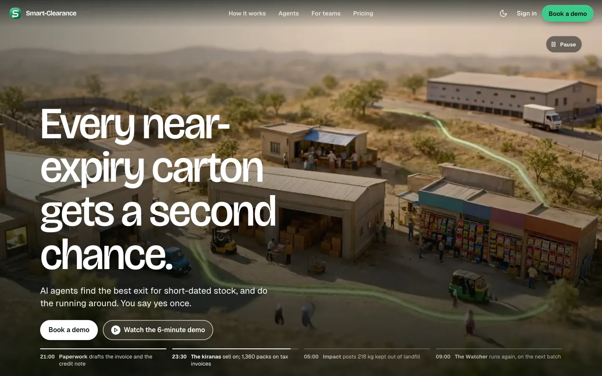<figcaption>Dark, 1440: the night half, most of the town lost</figcaption></figure>
      <figure class="shot">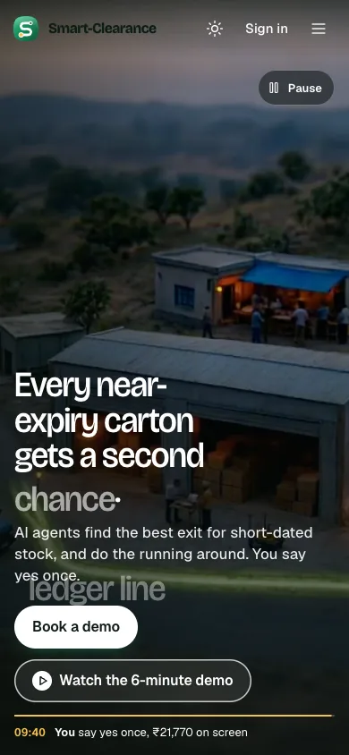<figcaption>A phone, light</figcaption></figure>
    </div>
  </section>

  <section class="sec">
    <h2>The four chapters, in every option</h2>
    <p>One day at the business, as the journey map tells it. The strip under the copy names the chapter the film is on and fills a line through it; the person's chapter is in amber. Every figure is computed in core/money.js.</p>
    <table>
      <tr><th>Hour</th><th>Chapter</th><th>What the film shows</th><th>The strip reads</th></tr>
      <tr><td>09:00</td><td><b>The brand and the distributor</b></td><td>Sunrise. The brand's cartons go onto the distributor's blue truck at the factory's bay; the office's woman and the distributor shake hands over the plan on her phone.</td><td>the Watcher flags 1,360 packs; one yes, ₹21,770 on screen</td></tr>
      <tr><td>13:00</td><td><b>The food bank</b></td><td>High sun. The white van at the community kitchen's blue awning, volunteers passing cartons to the table, a queue with plates.</td><td>packs with 15+ days left go as meals, on the FSSAI checklist</td></tr>
      <tr><td>18:30</td><td><b>The kiranas and the staff sale</b></td><td>Violet dusk. The kirana lane lit and busy, shoppers reaching for packets; by the godown's gate a staff-sale table under a tarpaulin with the workers queued.</td><td>31 shops order 588 packs; the godown's own staff buy up to 50</td></tr>
      <tr><td>22:00</td><td><b>Paperwork</b></td><td>Indigo-violet night. The office lit, the invoice and the credit note on the desk, two people raising their chai; then dawn, and round again.</td><td>the tax invoice and the credit note drafted; ₹1,224 of GST credit kept</td></tr>
    </table>
  </section>

  <section class="sec" id="options">
    <h2>The three options</h2>
    <p>Shared by all three: a locked story in four chapters; 10 to 15 seconds, looping under Pause (the SC-78 rule); the film drifts with the scroll, not the clock; the light theme starts in the morning and the dark one at night; under reduced motion the plate, the final word and the last chapter. What differs is how the camera tells it.</p>
    <div class="grid">
      <article class="opt rec">
        <div class="opt-head"><h3>A · One town, four acts</h3><span class="tag rec">Recommended</span><span class="tag">14.2 s · seamless loop</span></div>
        <p>The whole town, locked off, as the hero the maintainer likes. The day is told in four plates edited from the approved plate so the geometry holds (sunrise, high sun, violet dusk, indigo-violet night), each act staged in it: the truck at the bay and the handshake; the van at the kitchen; the staff-sale table and the busy lane; the office lit. Four five-second clips, each conditioned to end on the next plate, chain through quarter-second dissolves (LTX lands within reach of the plate, not on it), and the last runs back into the first, so the loop closes without a cut. The page's own camera leans in 1.5× on each act's place, so the small story reads at any size.</p>
        <figure class="shot"><video src="media/a-day.mp4" poster="img/town-morning.webp" controls muted loop playsinline preload="metadata"></video><figcaption>The film: sunrise, high sun, violet dusk, violet night, and round</figcaption></figure>
        <div class="grid">
          <figure class="shot">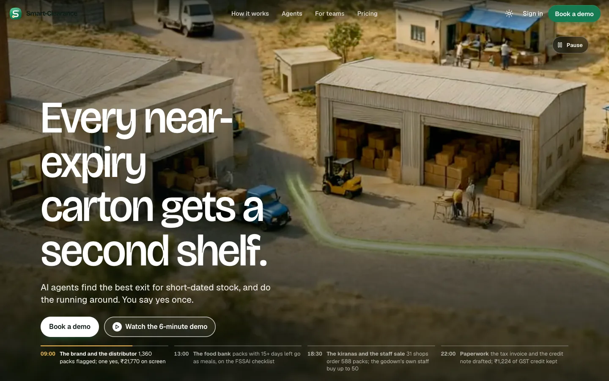<figcaption>Light, 1440, the first act</figcaption></figure>
          <figure class="shot">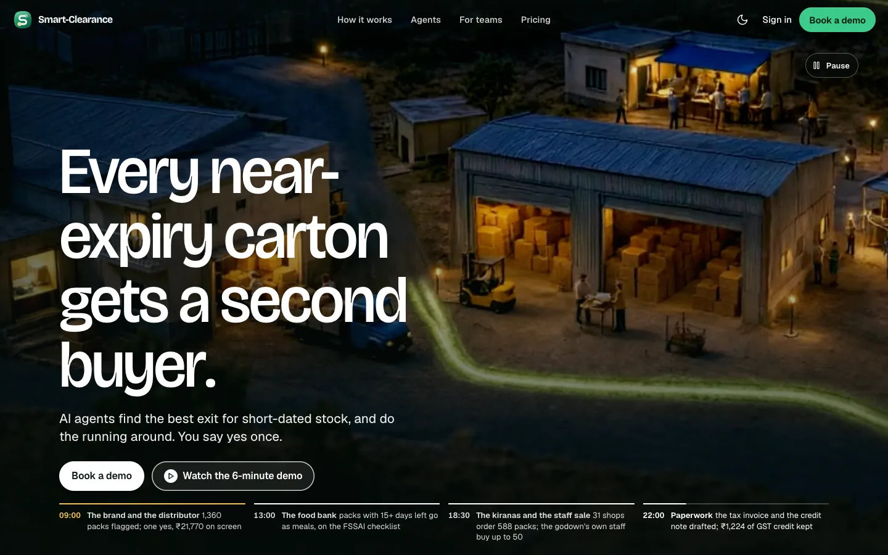<figcaption>Dark, 1440, the night act</figcaption></figure>
          <figure class="shot">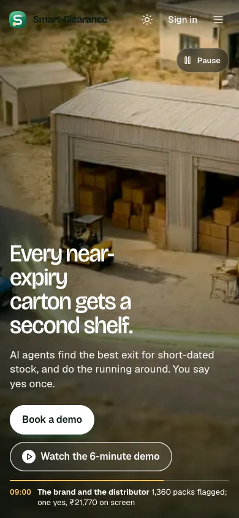<figcaption>A phone</figcaption></figure>
        </div>
        <figure class="shot"><video src="option-a/motion.mp4" poster="option-a/motion.webp" controls muted playsinline preload="metadata"></video><figcaption>The page played through: the four acts with the camera leaning in</figcaption></figure>
        <p><b>Why A.</b> It keeps what works (one surreal world under a calm heading) and adds what was asked: every chapter staged, the night richer and visible, the violet carried through dusk and night, 15 s, a seamless loop. <b>Trade-off:</b> at the wide scale the acts are small; the lean-in and the strip carry them. The night is the shortest hour: LTX hurries from night into dawn, so even the re-rendered night act holds about two seconds before the sky lifts (about four and a half seconds of night in all, with the dusk's end). <b>The build:</b> the four plates and the film ship with the page; <code>site.jsx</code>'s hero takes one looping player and the lean; the port's <code>Hero.svelte</code>, <code>figures.ts</code> and <code>media.ts</code> follow. For the build the clips are re-rendered at 1080p (5 s each, which LTX allows), so the lean stays sharp.</p>
      </article>
      <article class="opt">
        <div class="opt-head"><h3>B · Follow the carton</h3><span class="tag">14.1 s · dissolve loop</span></div>
        <p>Four close shots, one per chapter, as a product film would cut them: the handshake at the factory's bay at sunrise; the cartons passed hand to hand at the kitchen under a high sun; the staff-sale table and the glowing lane under the violet dusk; the office at night, chai raised, the violet sky in the window. Each shot a fresh plate in the same miniature style, animated with a slow push-in, trimmed to four seconds and dissolved into the next over half a second; the tail dissolves back into the first shot, so the loop closes without a cut.</p>
        <figure class="shot"><video src="media/b-story.mp4" poster="img/shot-bay.webp" controls muted loop playsinline preload="metadata"></video><figcaption>The film: four shots, dissolved</figcaption></figure>
        <div class="grid">
          <figure class="shot">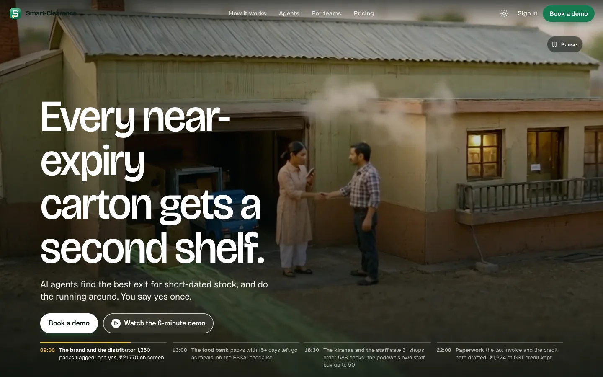<figcaption>Light, 1440, the bay</figcaption></figure>
          <figure class="shot">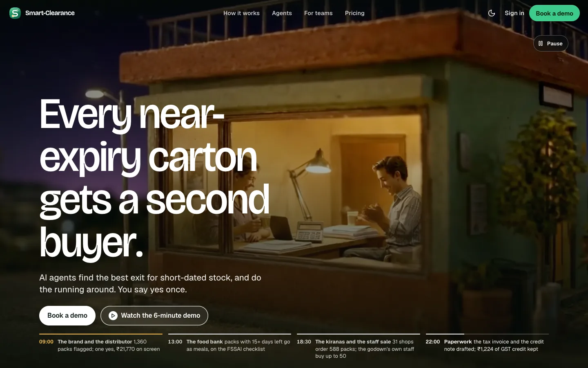<figcaption>Dark, 1440, the office</figcaption></figure>
          <figure class="shot">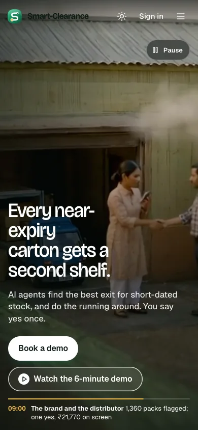<figcaption>A phone</figcaption></figure>
        </div>
        <figure class="shot"><video src="option-b/motion.mp4" poster="option-b/motion.webp" controls muted playsinline preload="metadata"></video><figcaption>The page played through: the four shots under the heading</figcaption></figure>
        <p><b>Why B.</b> The most legible story: each chapter fills the frame, with people, so "brands interacting with distributors" is a handshake you can see. The violet sky is in every dusk and night shot. <b>Trade-off:</b> the one world becomes four pictures, the heading sits over cuts (the shade is a touch stronger at the foot), and a dissolve is a cut, however soft. <b>The build:</b> four plates and one film; the hero takes one looping player; the port follows.</p>
      </article>
      <article class="opt">
        <div class="opt-head"><h3>C · One flight</h3><span class="tag">14.9 s · chained loop</span></div>
        <p>The camera flies one slow loop over the town like a small drone, out over the factory, along the road past the godown, over the kitchen's awning, back along the kirana lane and up to where it began, while a whole day passes under it, morning to a violet night; then the same flight back as the night lifts. Two ten-second flights (LTX's FPV motion LoRA), each conditioned to end on the frame the other begins on, retimed to 7.5 s each. The most immersive camera; the story is what the flight passes. As rendered, the day's flight lifts off and bends the town for its first three seconds before settling into the wide time-lapse, and the night's flight never leaves the ground.</p>
        <figure class="shot"><video src="media/c-day.mp4" poster="img/town-morning.webp" controls muted playsinline preload="metadata"></video><figcaption>The day's flight (then c-night.mp4 back)</figcaption></figure>
        <div class="grid">
          <figure class="shot">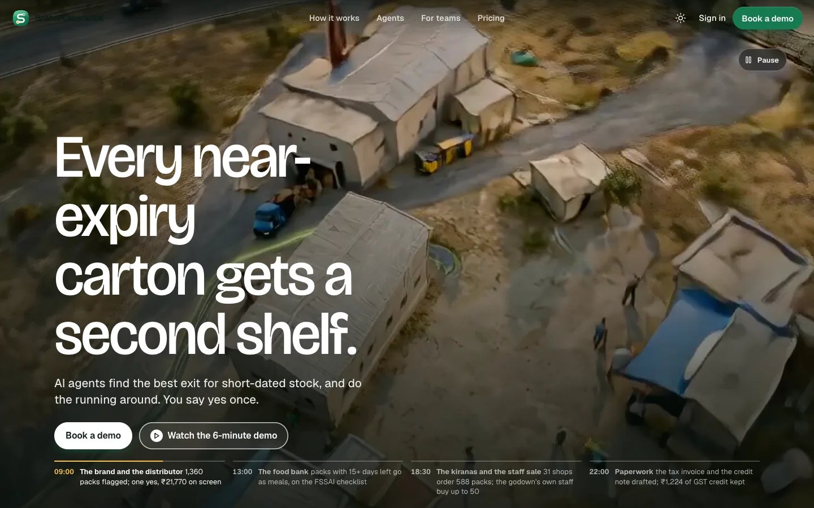<figcaption>Light, 1440</figcaption></figure>
          <figure class="shot">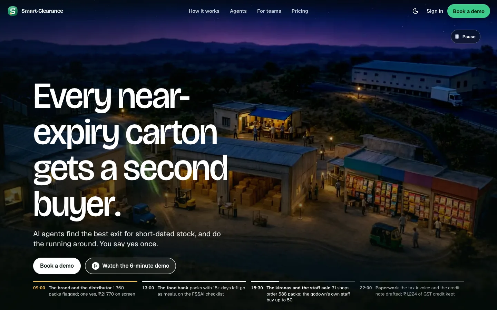<figcaption>Dark, 1440</figcaption></figure>
          <figure class="shot">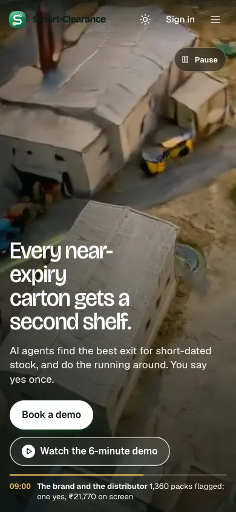<figcaption>A phone</figcaption></figure>
        </div>
        <figure class="shot"><video src="option-c/motion.mp4" poster="option-c/motion.webp" controls muted playsinline preload="metadata"></video><figcaption>The page played through: the flight under the heading</figcaption></figure>
        <p><b>Why C.</b> Spectacle: the town in motion under the reader's eye, the day turning as it flies. <b>Trade-off:</b> a moving camera under a heading is harder to read, the acts are not staged (the plates are A's first and last), and a generated flight can bend the town on its way; it is the riskiest to keep steady. <b>The build:</b> as SC-78's two chained players, with the new clips.</p>
      </article>
    </div>
  </section>

  <section class="sec">
    <h2>The plates</h2>
    <p>Option A's four hours, each an edit of the approved town plate so every building stays where the tour and the pins expect it; option B's four shots, fresh renders in the same miniature style. All at 2048 (about 2752 × 1536), with their prompt sidecars in <code>img/</code>. The night plate is the one the maintainer asked for: the violet sky carried into the night, and the town visible in it.</p>
    <div class="grid">
      <figure class="shot">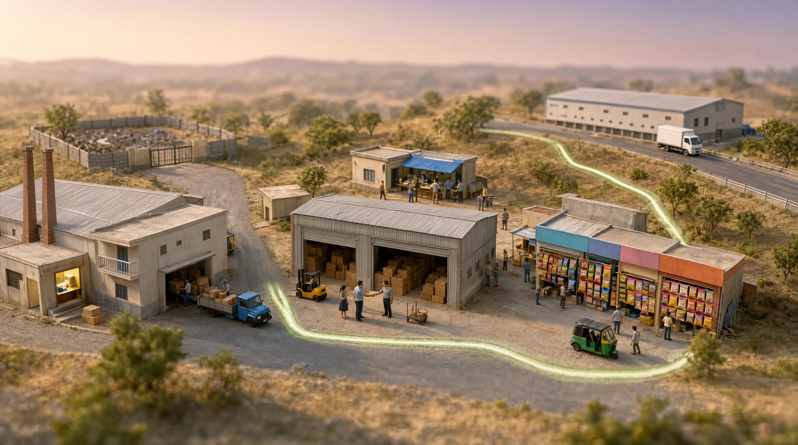<figcaption>A · 09:00, sunrise</figcaption></figure>
      <figure class="shot">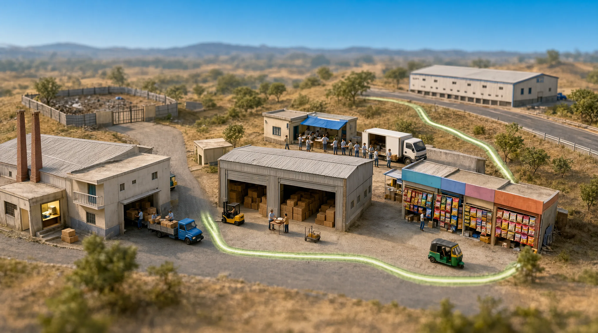<figcaption>A · 13:00, the van at the kitchen</figcaption></figure>
      <figure class="shot">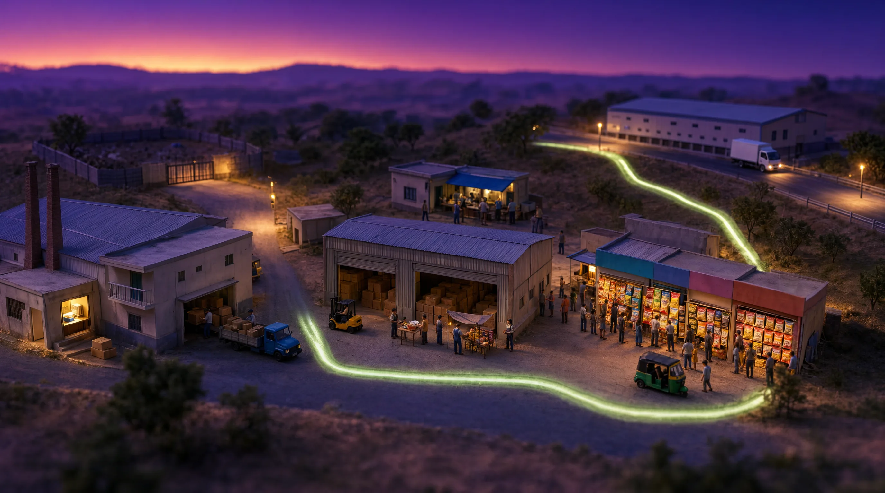<figcaption>A · 18:30, violet dusk</figcaption></figure>
      <figure class="shot">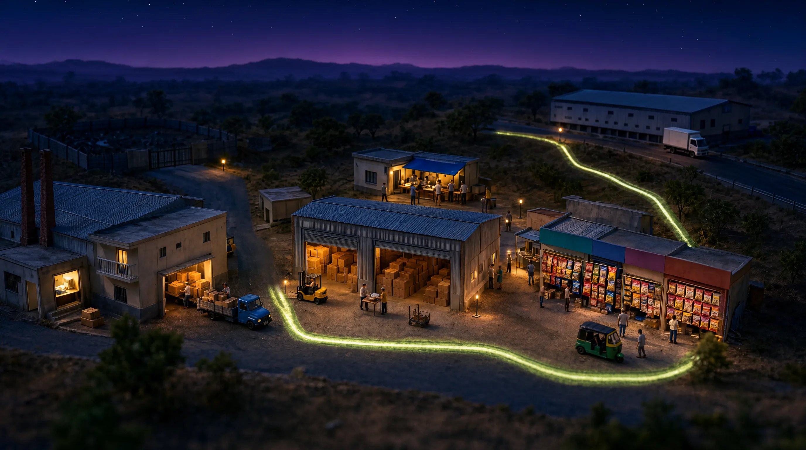<figcaption>A · 22:00, indigo-violet night</figcaption></figure>
      <figure class="shot">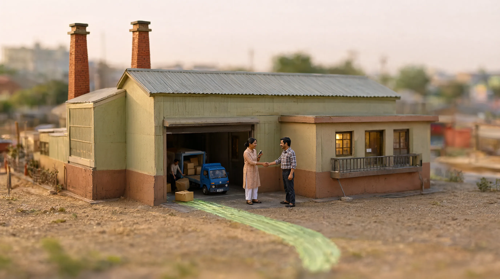<figcaption>B · the bay</figcaption></figure>
      <figure class="shot">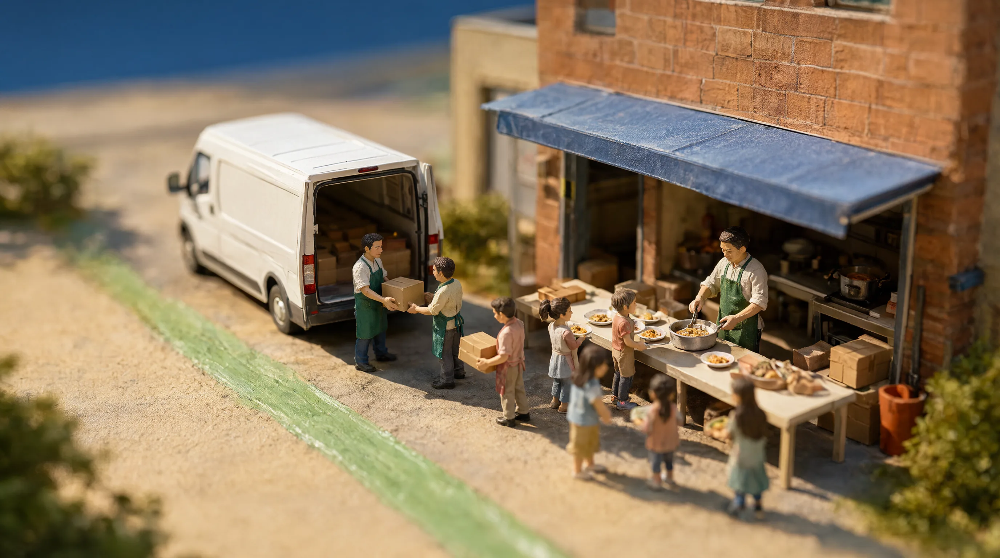<figcaption>B · the kitchen</figcaption></figure>
      <figure class="shot">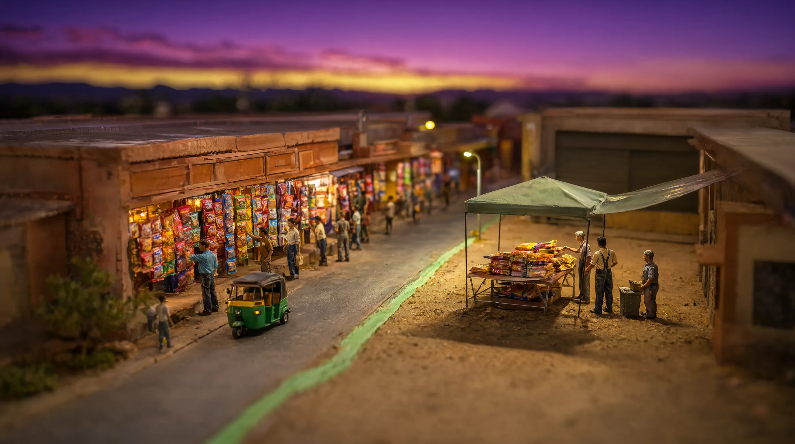<figcaption>B · the lane and the staff sale</figcaption></figure>
      <figure class="shot">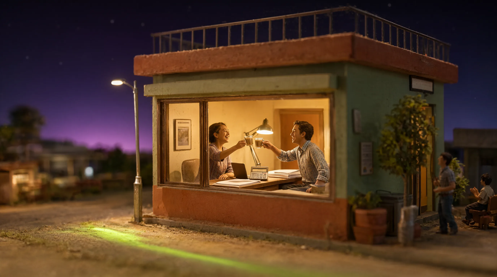<figcaption>B · the office</figcaption></figure>
    </div>
  </section>

  <section class="sec">
    <h2>Checks made</h2>
    <ul class="plain" id="checks">
      <li>Every page renders without console errors in Chromium at 1440 × 900 and 390 × 844, light and dark.</li>
      <li>The strip's dim text is white at 66% over the film's shade, at least 7:1; its lit text is white. Option B's shade is a touch stronger at the foot, since its shots change.</li>
      <li>The loops, measured on a 0 to 255 scale against each film's own frame-to-frame change: A's last frame to its first is 3.7, where its frames move by 2.0 (median) to 5.1; B's is 5.7 against a median of 5.7 (its push-ins move every frame); C's two flights meet at 4.5 and 5.7, under the players' one-second cross-fade.</li>
      <li>The dark theme opens on the night: A at 10.5 s (the strip reads 22:00), B at 10.35 s (the office), C on the night's flight. Found on the way: python's http.server answers no byte ranges, so a browser cannot seek a film it serves and the night start silently stayed at 0 in every capture until design3 was served with ranges.</li>
      <li>Option A's night act was rendered twice: the first render left the night within a second, the second (seed 8205, the night told to hold) keeps it for about two.</li>
      <li>No browser suite was run (SC-55).</li>
    </ul>
  </section>

  <section class="ask">
    <h2>The ask</h2>
    <p>One option: <b>A</b> (recommended), <b>B</b> or <b>C</b>, or none of these and what to change. A mixed answer works too: "A's film with B's night shot" is a sentence away.</p>
  </section>
</main>
</body>
</html>
